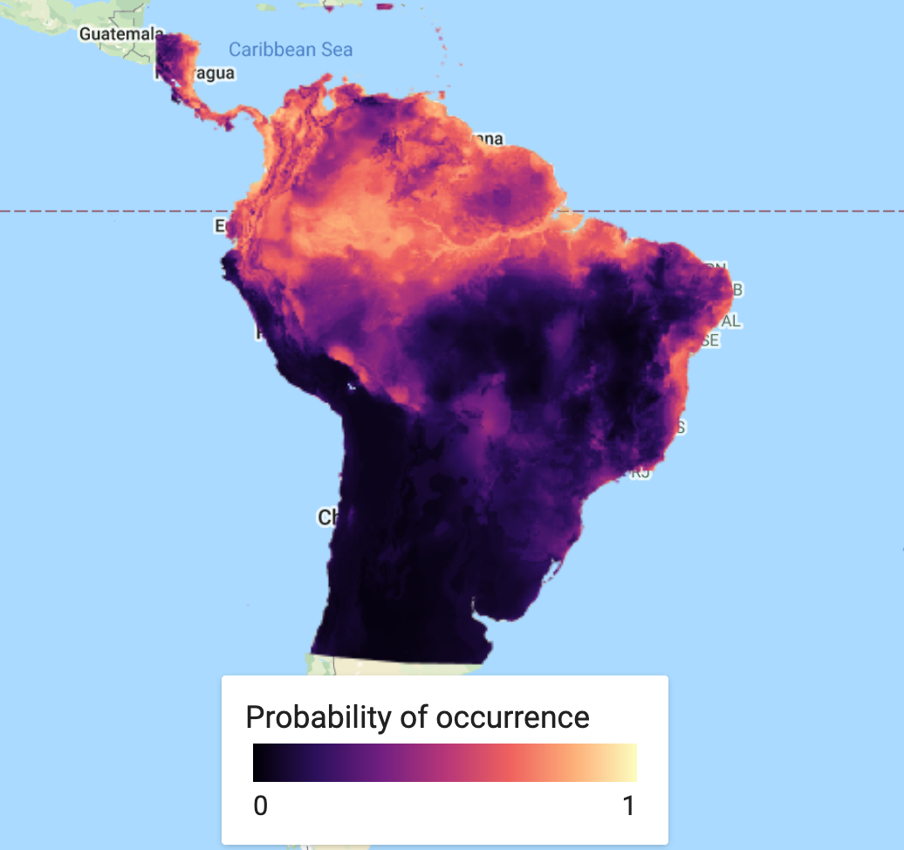
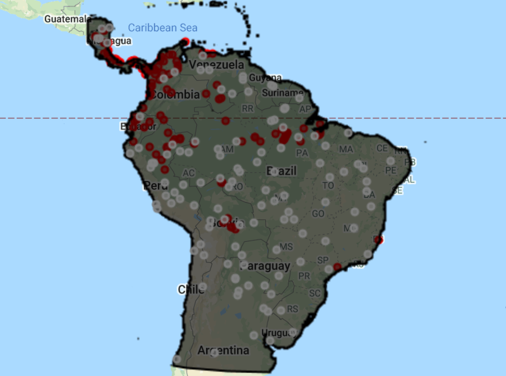
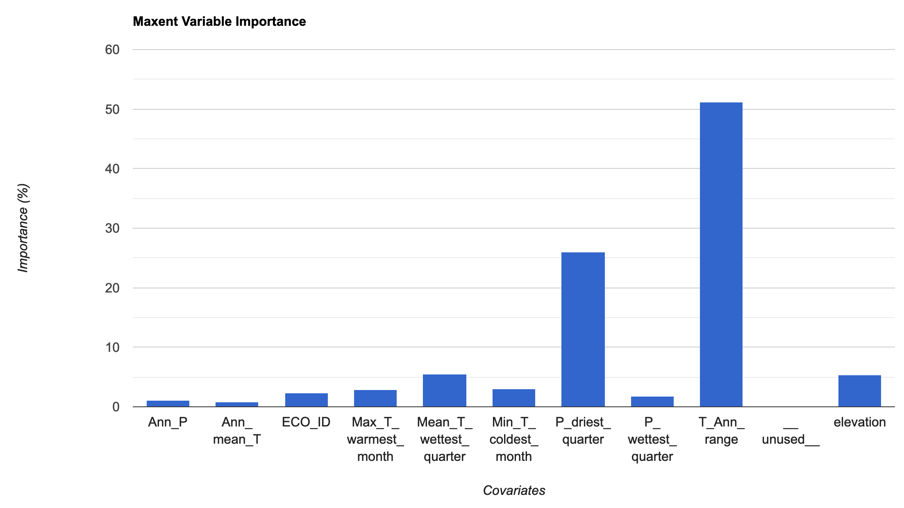
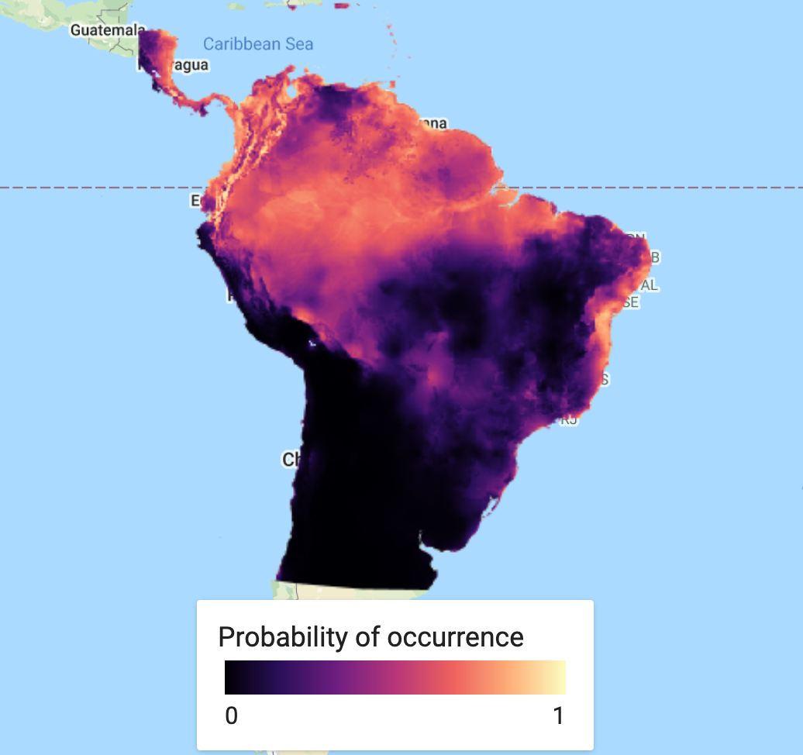
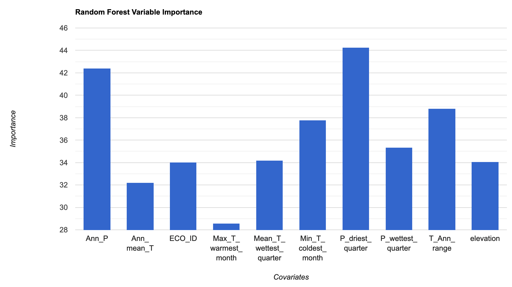
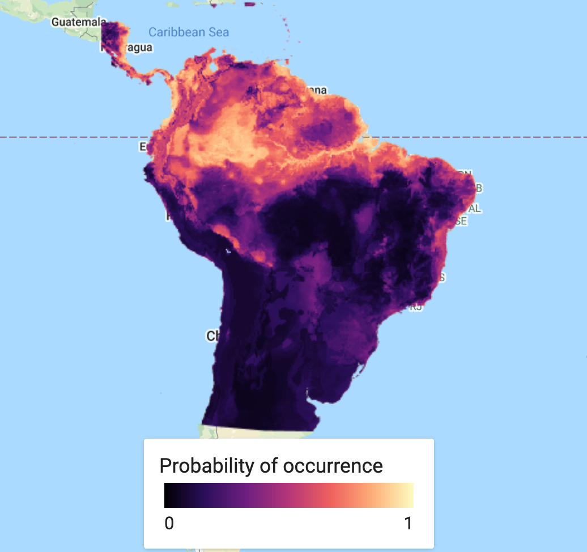

GOOGLE EARTH ENGINE FOR ECOLOGY AND CONSERVATION
Practical 8: Species Distribution Modeling
Access the completed practical script here.
Learning Objectives
By the end of this practical you should be able to:
- Build an Image of selected environmental covariates
- Extract covariates
- Model fitting
- Discuss the need for model evaluation

Introduction
Species Distribution Models are a valuable tool in ecology and conservation, providing us with insights into global change impacts, allowing us to project potential future range shifts in species. Using geo-referenced species localities and environmental predictors we can determine the important environmental conditions for species at their known sites.
However, they need to be used carefully and with full understanding of the models used and outputs provided. For example, we may not have a full sample of species localities or not have all of the relevant environmental variables. This means we need to have a strong understanding of the species sampling, biogeography and potentially biotic interactions to accurately predict their distributions. Take a look at this R tutorial for more information on SDMs. Further information of MaxEnt can be found here.
SDMs are not a feature commonly used in GEE and therefore the documentation does not have full support that other algorithms or processes may have. Though this has recently changed with the addition of the American Museum of Natural History version of the MaxEnt algorithm as of March 2021. With further use of this platform this is likely to change. The strong potential of GEE in the SDM space is the ability to process large amounts of data very quickly. Additionally, there is a large value in extracting covariate data to complete SDM analyses in other programs. Let's begin...
Import data & Pre-process
For this practical we will need two core datasets. Our geo-referenced species localities or presences and our geographic layers of environmental predictor variables. In addition to this we will need a chosen area of interest. Let's start by importing our locality data.
We will use data sourced from GBIF (Global Biodiversity Information Facility), which has a massive online collection of freely available biodiversity data. Our species of interest - Bradypus variegatus - is a species commonly used Species Distribution Modeling tutorials. This data has been extracted from the R dismo package. This dataset has already been uploaded as an asset and made publicly available. We load this data in as an asset and then add it to our map.
// Locality data ////////////////////////////////////////////// // Presence points of Solanum acuale (extracted from the R Dismo package and uploaded to GEE as an asset) // var presences = ee.FeatureCollection("users/jdmwhite/solanum_acuale"); // Presence points of Bradypus variegatus (extracted from the R Dismo package and uploaded to GEE as an asset) var presences = ee.FeatureCollection("users/jdmwhite/bradypus"); // Add presence points to map Map.addLayer(presences, {color: 'red'},'Bradypus presences', false);
Next, we'll define our area of interest (AOI) by loading in the countries dataset and drawing a polygon around it. We want to create a polygon that only includes terrestrial sources. We will use our imported polygon together with the countries database to create our area of interest. We use the intersection() function to ‘clip’ the countries dataset to the polygon. We then combine our new aoi into a single feature using the union() function, which effectively removes the countries borders. Lastly, we add our polygon and aoi to the map.
// Area of interest //////////////////////////////////////////////////////////////////////////////////////////////////// // Load in the countries FeatureCollection data var countries = ee.FeatureCollection("USDOS/LSIB_SIMPLE/2017"); // Create a polygon. var polygon = ee.Geometry.Polygon([ [-87.14743379727207,-34.736435036461145],[-32.12790254727207,-34.736435036461145],[-32.12790254727207,16.642228542503663], [-87.14743379727207,16.642228542503663],[-87.14743379727207,-34.736435036461145] ]); // Find the intersection of the polygon and S.American countries // Map over the countries and use filterBounds & intersect to clip to our S.American AOI var aoi = countries.filterBounds(polygon).map(function(f) { return f.intersection(polygon, 1);//1 refers to the maxError argument }); // Combine the countries/polygons into one feature with union var aoi = aoi.union(); Map.addLayer(polygon,{}, "Polygon", false); Map.addLayer(aoi, {},"Area of interest", false);
We then import the environmental covariates. The first group of covariates is from the WorldClim dataset. The WorldClim data provides average bioclimatic conditions for the entire globe between the period 1960-1991 and is commonly used in SDMs. Secondly, we import SRTM for terrain data. Lastly, we import the eco-regions dataset. We then merge our full covariate dataset together, using the addBands() function. At the same time, we can now clip this to our aoi. Using this approach you can add in extra bands from any other dataset to your covariates.
// Environmental data //////////////////////////////////////////////////////////////////////////////////////////////////// // Load in bioclimatic variables from WorldClim // Based on the R Dismo tutorials - these are the bioclim variables typically used for Bradypus distributions var worldclim = ee.Image("WORLDCLIM/V1/BIO").select(['bio01','bio05','bio06','bio07','bio08','bio12','bio16','bio17']).rename( ['Ann_mean_T','Max_T_warmest_month','Min_T_coldest_month', 'T_Ann_range','Mean_T_wettest_quarter','Ann_P', 'P_wettest_quarter','P_driest_quarter']); // Load in terrain data var elev = ee.Image("USGS/SRTMGL1_003"); // Load in Eco-regions var ecoregions = ee.FeatureCollection("RESOLVE/ECOREGIONS/2017").filterBounds(aoi) // filter this to our area of interest .reduceToImage({ // now run a vector to raster conversion properties: ['ECO_ID'], // select the band of interest reducer: ee.Reducer.first() // run a first() reducer - there is no overlap so this just takes the first value }).select('first').rename('ECO_ID'); // the band is named 'first', so rename to ECO_ID // Map.addLayer(ecoregions, {min: 439, max: 617}, 'Ecoregions', false); // We now want to merge our full environmental covariate dataset together, using addBands() // At the same time we can now clip it to our area of interest var vars = worldclim.addBands(elev).addBands(ecoregions).clip(aoi); // Using this method, you can add in extra bands to your predictor variable from any Image/ImageCollection print('Check all covariates:', vars); // NOTE // // At this point it is valuable to calculate a correlation matrix and select only variables // that are uncorrelated below a certain threshold. // For GEE script on this, see https://code.earthengine.google.com/27557ebe40e549f604ed1005e047b75a
Further pre-processing
We now want to create pseudo-absence points, merge this together with our presence points and provide a binary presence property to each observation. The first step is to make sure all of our presence points are within our region. We then add 1 to all presence localilities. We then need to create our random pseudo-absence points and add 0 to each one. We create the same number of pseudo-absence points as there are presences, but this may depend on which model you are training your data on. Note that the generation of pseudo-absence points has a lot of literature related to it and should be carefully considered before running any SDM. View this article for more information on pseudo-absences in SDMs.
Lastly, we merge the datasets together to give a single FeatureCollection of all points.

// Locality data // // Make sure all of the presence points are within our AOI var filtered_locs = presences.filterBounds(aoi); // How many presence points do we have? print('No. of localities:', filtered_locs.size()); //add a presence property to each feature i.e. a value of 1 to represent presence var Presence = filtered_locs.map(function(feature){ return feature.set('Presence', 1); }); //create random pseudo-absence points and add 0 value to the presence property for absence // check the Docs for the randomPoints function; requires region, number of points to generate & a seed var pAbsencePoints = ee.FeatureCollection.randomPoints(aoi, filtered_locs.size(), 42).map(function(feature){ return feature.set('Presence', 0); // we then add 0s to all pseudo-absences }); // You need to be careful with how you chose your pseudo-absences... // Add pseudo-absence points to the map Map.addLayer(pAbsencePoints, {color: "gray"}, "Pseudo-absence points", false); //Merge the presence and pseudo-absence points into a single feature var points = Presence.merge(pAbsencePoints); print('Check the full points dataset:', points);
For later model evaluation, it is important to have a set of data for ‘training’ the model and another set of data for ‘testing’ the model. We do this by adding in a random column and filtering the dataset based on these new random numbers, selecting 80% of the data for training and 20% for testing.
// For later model evaluation, it is important to have a set of data for 'training' the // model and another set of data for 'testing' the model // To do this, we will split the data into 80% for training and 20% for testing // Add a random column by default named 'random' var new_table = points.randomColumn({seed: 42}); var training = new_table.filter(ee.Filter.lt('random', 0.80)); // print("Check training data:", training); var test = new_table.filter(ee.Filter.gte('random', 0.80)); // print("Check test data:", test);
The last step in the data processing is to extract the values of each band of our predictor variables for each point in our dataset. We do this using the sampleRegions() function.
// Extract the environmental variable values for each point // Sampling using sampleRegions() var trainingData = vars.sampleRegions({ collection: training, properties: ['Presence'], geometries: true, scale: 1000 }); print('Check sampled data:', trainingData.limit(5));
At this point, many users may want to export the locality data, together with the covariate data to use it in a different program where there is more support for SDMs. So we will export the data before continuing. You can export it as a shapefile or csv.
Export.table.toDrive({collection: trainingData, description: 'Bradypus_sampled', fileFormat: 'SHP'});
Analysis
There are several different options for classifiers in GEE, which can be viewed in the Docs tab by typing ee.Classifier. We will be using the amnhMaxent() and smileRandomForest() functions as they allow for variable importance values to be extracted (which is only recently available for MaxEnt models in GEE). There are several options one can add to fine-tune the model to your own specifications. For the random forest function, the only argument that is required is the number of decision trees to use. We select the output mode of probability. However, for later model evaluation, you will need to select classification, which is not available for MaxEnt.
MaxEnt Model
// We will now fit a Classifier, using Maxent var MXmodel = ee.Classifier.amnhMaxent() .setOutputMode('PROBABILITY') .train({ features: trainingData, classProperty: 'Presence', inputProperties: vars.bandNames(), }); print(MXmodel, 'model input'); // Take a look at the model inputs // Take a look at the model output // This shows us the relative contributions of covariates to Bradypus distribution // and also gives us the overall AUC of the model print(MXmodel.explain(), 'model output');
MaxEnt Visualisation
We will then extract the variable importance data and add it to a chart. To pull the information from the model, we use explain() and then get() to pull the specific information we are interested in. We then add this to a chart for visualization. The MaxEnt in GEE uses the percentage contributions nromalized to percentages. See the MaxEnt tutorial for more information on how this is calculated.

// Variable importance as contributions var MXimportance = MXmodel.explain().aside(print,'explain MX model') .get('Contributions').aside(print, 'Check MX model importance'); // Convert the importance values into a feature for plotting var MXimportance_plot = ee.FeatureCollection(ee.Feature(null, ee.Dictionary(MXimportance))); print('Check importance values:', MXimportance_plot); // Plot the resulting variable importance in a bar chart var chart = ui.Chart.feature.byProperty(MXimportance_plot) .setChartType('ColumnChart') .setOptions({ title: 'Maxent Variable Importance', legend: {position: 'none'}, hAxis: {title: 'Covariates'}, vAxis: {title: 'Importance (%)'} }); print(chart);
This is a simple step. We classify or predict the output of the model, based on selected predictor variables to find our probability of species occurrence. In this case, we use the full suite of variables used in the original model classification. You can save this as an asset and load it back in to save on computation.
// Run the prediction var MXprediction = vars.classify(MXmodel); // Export the image to an Earth Engine asset. Export.image.toAsset({ image: MXprediction, description: 'MX_prediction', scale: 30, region: aoi }); // var MXprediction = ee.Image('users/jdmwhite/MX_prediction');
First we will load in a custom palette for the visualization. Next step is to add our predicted species occurrence to our map.

// Add in custom palette var palettes = require('users/gena/packages:palettes'); var palette_mag = palettes.matplotlib.magma[7]; Map.addLayer(MXprediction, {bands: 'probability', min: 0, max: 1, palette: palette_mag}, 'Probability of occurence (MaxEnt)', false);
In many cases, you will not rely on a single model and it may be preferable to use many models and find an average over several models. A short example of how to do this, is to produce a new model - this time using Random Forest - and finding the mean over our two predicted classifications. First we classify the Random Forest model. We then create a new ImageCollection of the two SDM models, before finding the mean of the two bands and then adding the ensemble prediction to the map.
Random Forest Model & Visualisation
The next block of code essentially repeats the MaxEnt approach given above.
 
// We need to specificy the number of trees required; we'll use 100 trees, which can be a good balance // between under/over-fitting var RFmodel = ee.Classifier.smileRandomForest({numberOfTrees: 100}) .setOutputMode('PROBABILITY') // .setOutputMode('CLASSIFICATION') .train({ features: trainingData, classProperty: 'Presence', inputProperties: vars.bandNames(), }); print("Check model output:", RFmodel); // Variable importance as Gini index var RFimportance = RFmodel.explain().aside(print,'explain model') .get('importance').aside(print, 'Check model importance'); // Convert the importance values into a feature for plotting var RFimportance_plot = ee.FeatureCollection(ee.Feature(null, ee.Dictionary(RFimportance))); print('Check importance values:', RFimportance_plot); // Plot the resulting variable importance in a bar chart var chart = ui.Chart.feature.byProperty(RFimportance_plot) .setChartType('ColumnChart') .setOptions({ title: 'Random Forest Variable Importance', legend: {position: 'none'}, hAxis: {title: 'Covariates'}, vAxis: {title: 'Importance'} }); print(chart); // Classify the image with the same bands used for training. var RFprediction = vars.classify(RFmodel); // Export the image to an Earth Engine asset. Export.image.toAsset({ image: RFprediction, description: 'RF_prediction', scale: 30, region: aoi }); // Load the predicted SDM image // var RFprediction = ee.Image('users/jdmwhite/RF_prediction') // Display the predicted probability of occurence results. Map.addLayer(RFprediction, {palette: palette_mag},'Probability of occurence (RF)', false);
Ensemble Visualisation
Find the mean classified values for the two SDM approaches
var collectionFromImages = ee.ImageCollection.fromImages( [ee.Image(RFprediction), ee.Image(MXprediction.select('probability').rename('classification'))]); print('Check collectionFromImages:', collectionFromImages); var ensemble_prediction = collectionFromImages.mean() print('ensemble',ensemble_prediction); Map.addLayer(ensemble_prediction, {palette: palette_mag},'Probability of occurence (ensemble)', false);
A useful extra step is to add a legend to aid our visualisation. This needs to be coded from scratch and can look rather complicated. Be aware that to customise this code for your purpose, there are only a few arguments you may need to change, which have comments next to them. This includes the min and max values, the specific palette of choice, the legend title and lastly the legend position. This legend will work best in an interactive app scenario, as it is not straightforward to export it.
// Styling for the legend title. var LEGEND_TITLE_STYLE = { fontSize: '16px', // fontWeight: 'bold', stretch: 'horizontal', textAlign: 'left', margin: '4px', }; function ColorBar(palette) { return ui.Thumbnail({ image: ee.Image.pixelLonLat().select(0), params: { bbox: [0, 0, 1, 0.1], dimensions: '100x10', format: 'png', min: 0, // change min value max: 1, // change max value palette: palette_mag, // chose the correct palette }, style: {stretch: 'horizontal', margin: '0px 8px'}, }); } // Returns our labeled legend, with a color bar and three labels representing // the minimum, middle, and maximum values. function makeLegend() { var labelPanel = ui.Panel( [ui.Label('0', {margin: '4px 8px'}), // change min label here ui.Label('',{margin: '4px 8px', textAlign: 'center', stretch: 'horizontal'}), ui.Label('1', {margin: '4px 8px'})], // change max label here ui.Panel.Layout.flow('horizontal')); return ui.Panel([ColorBar(palette_mag.palette), labelPanel]); } // Assemble the legend panel. Map.add(ui.Panel( [ ui.Label('Probability of occurrence', LEGEND_TITLE_STYLE), makeLegend() // change title here ], ui.Panel.Layout.flow('vertical'), {width: '230px', position: 'bottom-center'})); // change location here to chose where to put legend
We can also export our SDM prediction Image as a PNG. Do to this, we use the getThumbURL() function. To increase the resolution of this image, change the dimensions argument for the width. The height will be automatically calibrated. This produces a url for a PNG thumbnail, which can then be downloaded to your computer.
// Specify region by your polygon, define the chosen palette & set width size (height adjusts automatically). var thumbnail = MXprediction.select('probability').getThumbURL({ palette: palette_mag, dimensions: 1000, // change dimensions here for a higher res image region: polygon, format: 'png' }); print('Output image:', thumbnail);
Model Evaluation
An important last step in all classification modelling is to determine the accuracy of the probability of occurrence or presence/absence map. There are several methods available to produce metrics on model (in)accuracy. The code for this has been included here, so as to produce the a full workflow for GEE classification. However, the metrics will only be covered in depth in the next practical.
To run these model evaluation metrics, you will need to go back to your ee.Classifier.smileRandomForest() function and change the setOutputMode() from ‘PROBABILITY’ to ‘CLASSIFICATION’.
var Accuracy = RFmodel.confusionMatrix().accuracy(); print('Training Data Accuracy:', Accuracy); // Test accuracy var testData = vars.sampleRegions({ collection: test, properties: ['Presence'], // geometries: true, scale: 1000 }); print('Check test data:',testData.limit(5)); var Test = testData.classify(RFmodel); print(Test); print('ConfusionMatrix', Test.errorMatrix('Presence', 'classification')); print('TestAccuracy', Test.errorMatrix('Presence', 'classification').accuracy()); print('Kappa Coefficient', Test.errorMatrix('Presence', 'classification').kappa()); print('Producers Accuracy', Test.errorMatrix('Presence', 'classification').producersAccuracy()); print('Users Accuracy', Test.errorMatrix('Presence', 'classification').consumersAccuracy());
Practical Assignment #6
// Use the Solanum acuale presence data (or your own species locality data) to analyse the important environmental covariates that determine this plant's distribution patterns. // .............................................. // Comment out the import code for Bradypus and uncomment in the import code for Solanum // Consider adding in more or different environmental covariates // Run at least the MaxEnt model // .............................................. // Provide some commentary (2-3 sentences) with your assignment on the covariates that are most important contributors to explaining Solanum acuale's distribution patterns and whether the model is an accurate representation of the patterns based on the strength of the model using the AUC value. // ..............................................
Sharing your code to complete the practical assignments To complete the practical exercise below you need to know how to share your scripts with us. Simply click on "Get Link" - the actual button NOT the dropdown arrow - Then click the "Click to copy link" button and paste that in an email to us ots.online.education@gmail.com. !NB! Please remember to add the prac number in the header.
Please share your feedback on this practical by completing this quick (2 min) survey. Thank you!